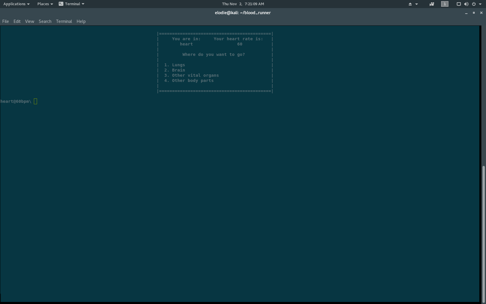

First Release!
Made for a science project, Blood Runner has been very interesting
With alpha 1 we want to make the job of teaching easier.

Blood Runner was built as an in-class exercise to help learn about the circulatory system but it has become far more than that
With our first realease, consisting of 8876 lines of code, we have made a platform perfect for learning
Alpha 1 has:
- Easy interface
- Classic ascii animations
- Simple questions to answer
- The fun twist of having your heart rate go up when a question is incorrectly answered
- Game can easily be won giving satisfaction
- Unlimited mode makes winning no longer an option
- Hard mode makes it easier to die and raises the stakes